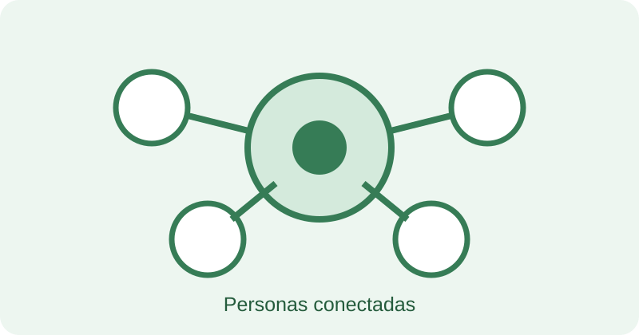
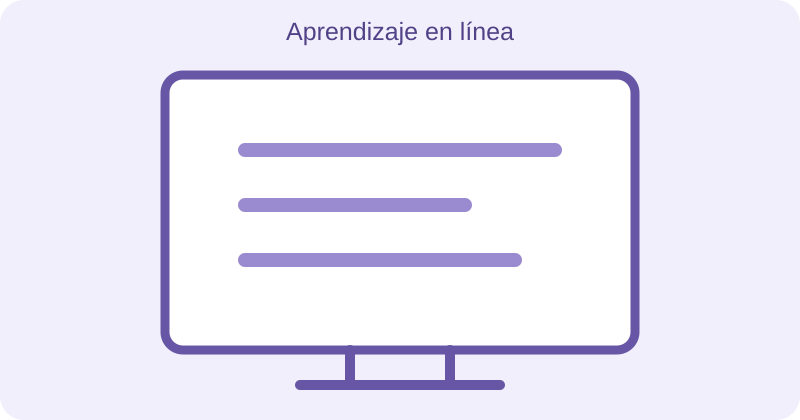

Comunicacion
El correo electronico, las redes sociales y las videollamadas permiten intercambiar mensajes e informacion en poco tiempo.
Su influencia en la sociedad y los negocios

La tecnologia web ha cambiado la manera en que las personas se informan, se comunican y participan en diferentes actividades. Con Internet es posible acceder a contenidos y mantener contacto con otras personas.
El correo electronico, las redes sociales y las videollamadas permiten intercambiar mensajes e informacion en poco tiempo.

Las plataformas educativas ofrecen materiales, actividades y espacios de interaccion.
Algunas instituciones permiten consultar informacion, solicitar turnos y realizar tramites mediante sus paginas web.